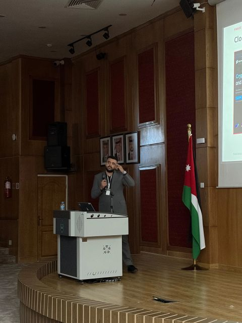
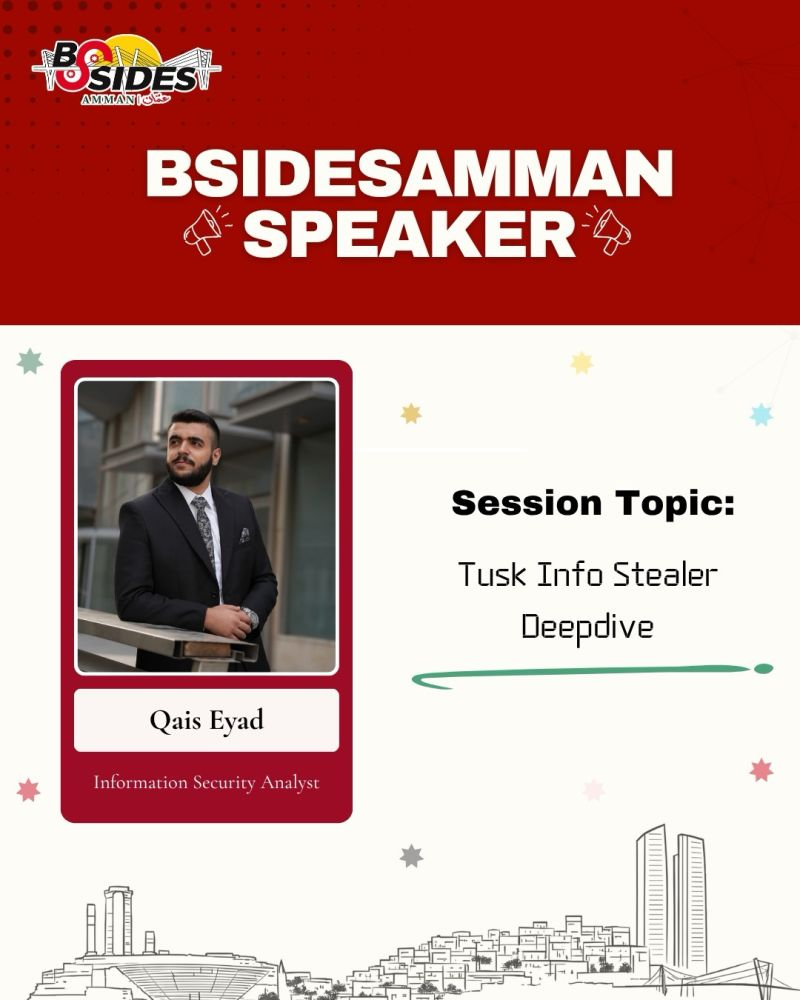
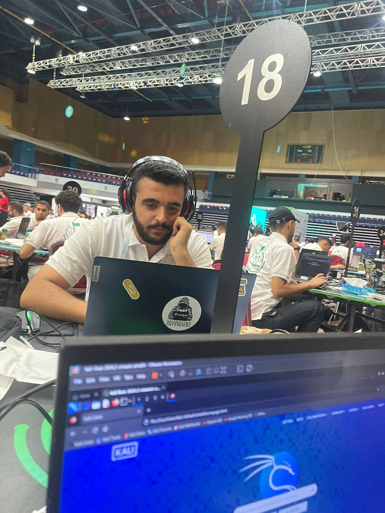

SOC 101
Covers defense frameworks, networking, Windows fundamentals and SIEM for anyone starting as a SOC analyst.بيغطي أطر الدفاع والشبكات وأساسيات ويندوز والـ SIEM، لأي حد بدو يبدأ كمحلل SOC.
IT Security Officer based in Amman, specialized in SOC and digital forensics. I also teach cybersecurity in Arabic through free YouTube courses, the SOC 101 course and private certification training.مسؤول أمن معلومات في عمّان، متخصص في الـ SOC والتحقيق الجنائي الرقمي. بقدّم كورسات أمن سيبراني بالعربي، منها مجانية على يوتيوب، وكورس SOC 101، وتدريب خاص للشهادات.
All courses are in Arabic and start from the basics.كل الكورسات باللغة العربية وبتبدأ من الأساسيات.
Covers defense frameworks, networking, Windows fundamentals and SIEM for anyone starting as a SOC analyst.بيغطي أطر الدفاع والشبكات وأساسيات ويندوز والـ SIEM، لأي حد بدو يبدأ كمحلل SOC.
Takes a complete beginner from zero to a solid intermediate level in cybersecurity.بياخذ أي طالب من الصفر لحد مستوى متوسط قوي بالأمن السيبراني.
Build a real SOC lab from scratch, run attacks against it and catch them in the SIEM.ابنِ لاب SOC حقيقي من الصفر، نفّذ عليه هجمات واكشفها بالـ SIEM.
Step-by-step solutions to SOC and DFIR labs, explained from zero.حلول خطوة بخطوة للابات SOC و DFIR، مشروحة من الصفر.
A short course on investigating memory dumps with Volatility, starting from scratch.كورس قصير بعلّمك تحقق بالـ Memory dumps باستخدام Volatility من الصفر.
Videos that show where to start and what to learn, step by step.فيديوهات بتوضحلك من وين تبدأ وشو تتعلم خطوة بخطوة.
 Watch on YouTubeشاهد على يوتيوب
Watch on YouTubeشاهد على يوتيوب
The skills, tools and certifications you need for your first SOC job, in order.المهارات والأدوات والشهادات اللي بتحتاجها لأول وظيفة SOC، بالترتيب.
 Watch on YouTubeشاهد على يوتيوب
Watch on YouTubeشاهد على يوتيوب
An overview of the cybersecurity field and its main career paths.نظرة عامة على مجال الأمن السيبراني وأهم التخصصات فيه.
One-on-one or small-group training. The content depends on your level, and we can start from zero.تدريب فردي أو لمجموعات صغيرة. المحتوى حسب مستواك، وبنقدر نبدأ من الصفر.
Timing, format (online or in person) and price are agreed on WhatsApp.المواعيد وطريقة التدريب (أونلاين أو حضوري) والسعر بنتفق عليها على الواتساب.
Security consulting for companies and individuals.استشارات أمنية للشركات والأفراد.
Choosing log sources, writing detection rules and tuning alerts.اختيار مصادر السجلات، كتابة قواعد الكشف، وضبط التنبيهات.
Help investigating a suspected breach, collecting evidence and containing it.مساعدة بالتحقيق باختراق مشتبه فيه، جمع الأدلة، والاحتواء.
Reviewing your current security controls and what needs fixing first.مراجعة الضوابط الأمنية الحالية وتحديد شو لازم ينصلح أول.
CV review, interview preparation and choosing the right certification.مراجعة السيرة الذاتية، التحضير للمقابلات، واختيار الشهادة المناسبة.
Send me a message on WhatsApp with what you need and we will set a time.ابعتلي على الواتساب شو بتحتاج ومنحدد موعد.
Message on WhatsAppراسلني على واتسابB.Sc. in Cyber Security, Hashemite University, 2025. Graduated with a Very Good GPA.بكالوريوس أمن سيبراني، الجامعة الهاشمية، 2025، بتقدير جيد جداً.


Technical talk on the Tusk InfoStealer campaign, mapping the attack to the Cyber Kill Chain from initial access to data exfiltration, with IoCs and detection logic for SOC and DFIR teams.محاضرة تقنية عن حملة Tusk InfoStealer، ربطت فيها مراحل الهجوم بالـ Cyber Kill Chain من الوصول الأولي لحد تسريب البيانات، مع الـ IoCs ومنطق الكشف لفرق الـ SOC والـ DFIR.

Qualified for the top 10 in the National Cyber Security Center competition.التأهل لأفضل 10 في مسابقة المركز الوطني للأمن السيبراني.

Finished 5th in the final after taking 2nd in the pre-final round with team Cyber-eto.المركز الخامس بالنهائي بعد المركز الثاني بالتصفيات مع فريق Cyber-eto.

Qualified for the final round of one of the largest CTFs in the Middle East and Africa.التأهل للنهائي في واحدة من أكبر مسابقات CTF بالشرق الأوسط وأفريقيا.

Also presented a live DFIR scenario at Security Day, Hashemite University.وقدّمت سيناريو DFIR مباشر في يوم الأمن بالجامعة الهاشمية.

Presented a malware analysis framework and was interviewed live on AlMamlaka TV about the role of national cybersecurity centers.عرض إطار عمل لتحليل البرمجيات الخبيثة، ومقابلة مباشرة على قناة المملكة عن دور المراكز الوطنية للأمن السيبراني.

Reached the finals with a project on forensics-driven malware detection.الوصول للنهائي بمشروع عن كشف البرمجيات الخبيثة بالتحليل الجنائي.

A network analyzer that uses machine learning to flag threats in live traffic.محلل شبكات بيستخدم تعلّم الآلة لكشف التهديدات بالترافيك المباشر.
Ask questions, share your writeups and get updates on new courses.اسأل، شارك حلولك، وتابع آخر الكورسات.
A full course for anyone who wants to work as a SOC analyst. It starts from the basics and goes up to investigating alerts on a SIEM.كورس كامل لأي حد بدو يشتغل محلل SOC. بيبدأ من الأساسيات ولحد التحقيق بالتنبيهات على الـ SIEM.
Price: 15 JOD, with lifetime access to the course.السعر: 15 دينار أردني، مع صلاحية وصول للكورس مدى الحياة.
Clicking Buy opens a WhatsApp chat with me to complete the payment and get the course.بس تكبس شراء بتنفتح محادثة واتساب معي لإتمام الدفع واستلام الكورس.
Free courseكورس مجانيSecurity 99 takes students from zero to an intermediate level in cybersecurity. Watch the episodes in order.كورس Security 99 بيأسس الطالب من الصفر لحد مستوى متوسط بالأمن السيبراني. تابع الحلقات بالترتيب.
Free courseكورس مجانيBuild a real SOC lab from scratch, run attacks on it and detect them using a SIEM.ابنِ لاب SOC حقيقي من الصفر، نفّذ عليه هجمات واكشفها باستخدام الـ SIEM.
Free courseكورس مجانيSolutions for CyberDefenders SOC and DFIR labs, explained step by step from zero.حل لابات SOC و DFIR من CyberDefenders، مشروحة خطوة بخطوة من الصفر.
Free courseكورس مجانيLearn memory forensics from zero using Volatility.تعلّم تحليل الذاكرة (Memory Forensics) من الصفر باستخدام أداة Volatility.
Private trainingتدريب خاصPreparation for the CEH exam. Covers reconnaissance, scanning, system hacking, web and network attacks, malware and social engineering, with practical labs.تحضير لامتحان CEH. بيغطي جمع المعلومات، الفحص، اختراق الأنظمة، هجمات الويب والشبكات، البرمجيات الخبيثة والهندسة الاجتماعية، مع لابات عملية.
Training is based on your level, and we can start from zero.التدريب حسب مستواك، وبنقدر نبدأ من الصفر.
Private trainingتدريب خاصPreparation for the CSA exam. Covers SOC operations, log management, SIEM, alert triage, threat intelligence and incident response.تحضير لامتحان CSA. بيغطي عمليات الـ SOC، إدارة السجلات، الـ SIEM، فرز التنبيهات، استخبارات التهديدات والاستجابة للحوادث.
Training is based on your level, and we can start from zero.التدريب حسب مستواك، وبنقدر نبدأ من الصفر.
Private trainingتدريب خاصPreparation for the INE eCIR exam. Covers incident handling, traffic and log analysis, and investigating attacks using a SIEM.تحضير لامتحان eCIR من INE. بيغطي التعامل مع الحوادث، تحليل الترافيك والسجلات، والتحقيق بالهجمات باستخدام الـ SIEM.
Training is based on your level, and we can start from zero.التدريب حسب مستواك، وبنقدر نبدأ من الصفر.
Private trainingتدريب خاصPreparation for the INE eCTHP exam. Covers threat hunting on network traffic and endpoints, building hypotheses and using threat intelligence.تحضير لامتحان eCTHP من INE. بيغطي صيد التهديدات على الشبكة والأجهزة، بناء الفرضيات، واستخدام استخبارات التهديدات.
Training is based on your level, and we can start from zero.التدريب حسب مستواك، وبنقدر نبدأ من الصفر.
Private trainingتدريب خاصFor beginners. Covers networking, operating systems, and the basics of attacks and defense.للمبتدئين. بيغطي الشبكات، أنظمة التشغيل، وأساسيات الهجوم والحماية.
No prior background needed. We start from zero.ما بتحتاج أي خلفية مسبقة، منبدأ من الصفر.
Private trainingتدريب خاصCovers evidence collection, disk and file system analysis, Windows artifacts, memory analysis and building a timeline.بيغطي جمع الأدلة، تحليل الأقراص وأنظمة الملفات، أدلة ويندوز، تحليل الذاكرة، وبناء الخط الزمني.
Training is based on your level, and we can start from zero.التدريب حسب مستواك، وبنقدر نبدأ من الصفر.